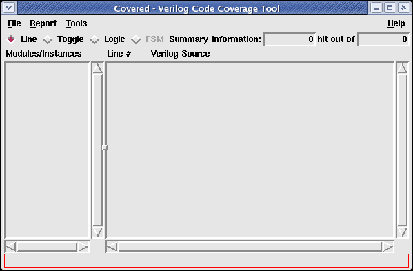

The information bar at the bottom of each window in the report viewer provides information about the current mode, file, or operation the user should take next. All information is state and context sensitive. If you are in doubt of what to do next, first see the information bar.
Figure 1. Covered Main Window Highlighting the Information Bar
